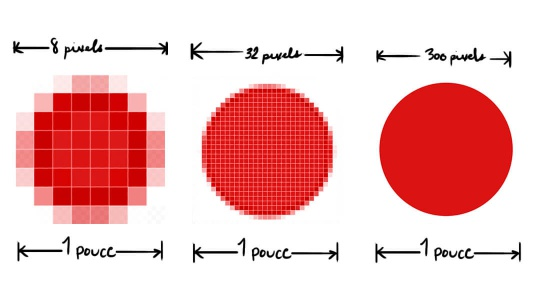

Imagerie numérique
Introduction
Un peu d'histoire
L'imagerie numérique est apparue dans les années 70. Elle a été rendue possible par l'invention du capteur CCD (Charge-Coupled Device) par Willard Boyle et George Smith. Ce capteur est capable de convertir une image en un signal électrique. Ce signal peut ensuite être numérisé et stocké dans un ordinateur.
Le premier appareil photo numérique a été inventé en 1975 par Steven Sasson. Il pesait 3,6 kg et avait une résolution de 0,01 mégapixels. Il fallait 23 secondes pour prendre une photo et 23 secondes pour l'afficher sur un téléviseur. Il fallait ensuite 23 secondes pour effacer la photo et pouvoir prendre une nouvelle photo. La photo était stockée sur une cassette audio. Il fallait 50 secondes pour transférer la photo sur un ordinateur.
Aujourd'hui, les appareils photo numériques sont beaucoup plus performants. Ils sont capables de prendre des photos de plusieurs dizaines de mégapixels en quelques millisecondes. Ils sont capables de prendre des vidéos en 4K à 60 images par seconde.
Qu'est ce qu'un Pixel ?
Un pixel est un point de l'image. Il est défini par sa position et sa couleur. Sa valeur représente la couleur du pixel. Plus la valeur est grande, plus le pixel est clair. Plus la valeur est petite, plus le pixel est foncé. La valeur d'un pixel dépend du mode de représentation de l'image.
Noir et blanc
Pour représenter une image uniquement en noir et blanc, on n'a pas besoin de beaucoup de valeurs différentes. On peut utiliser un seul bit pour représenter la couleur d'un pixel.
Comment pourrait-on représenter ça en mémoire ?
...............................................................................................................................................
Niveaux de gris
On veut maintenant représenter une image en différents niveaux de gris on a donc besoin de plus de valeurs différentes. On aura besoin d'utiliser 8 bits pour représenter la couleur d'un pixel.
Comment pourrait-on représenter ça en mémoire ?
...............................................................................................................................................
Couleurs
Enfin, pour des images en couleurs, on a besoin de beaucoup de valeurs différentes. On peut utiliser 24 bits pour représenter la couleur d'un pixel. On utilise généralement 8 bits pour chaque couleur primaire (rouge, vert, bleu). On appelle ce mode de représentation RVB (Rouge, Vert, Bleu). Dans ce cas chaque couleur est représentée par un nombre entre 0 et 255. On ne peut donc représenter qu'un nombre limité de couleurs mais c'est suffisant pour l'oeil humain.
Exemple : 🟥 correspondrait à un pixel de valeur (255, 0, 0) ; 🟩 correspondrait à un pixel de valeur (0, 255, 0) ; 🟦 correspondrait à un pixel de valeur (0, 0, 255) ;
Composition d'une image
Une image numérique est une matrice de pixels. On peut imaginer une image comme un tableau à deux dimensions. Chaque case du tableau correspond à un pixel. La taille du tableau correspond à la taille de l'image. La valeur de chaque case correspond à la couleur du pixel.
Exemple :
⬛⬛⬛⬛
⬛🟥🟥⬛
🟥🟨🟨🟥
🟨🟨🟨🟨
représente une petite image de 4x4 pixels. Cette image correspond en fait aux valeurs suivantes :
| (0, 0, 0) | (0, 0, 0) | (0, 0, 0) | (0, 0, 0) |
| (0, 0, 0) | (255, 0, 0) | (255, 0, 0) | (0, 0, 0) |
| (255, 0, 0) | (255, 255, 0) | (255, 255, 0) | (255, 0, 0) |
| (255, 255, 0) | (255, 255, 0) | (255, 255, 0) | (255, 255, 0) |
Plus il y a de pixels, plus l'image est détaillée. La taille d'une image est exprimée en pixels. Par exemple, une image de 1920x1080 pixels contient 1920 pixels en largeur et 1080 pixels en hauteur.
Pour tester le fonctionnement d'une image numérique, vous pouvez utiliser le site suivant : http://www.proftnj.com/RGB3.htm
Questions 1
Combien de couleurs différentes peut-on former avec un pixel RVB ?
...............................................................................................................................................
Questions 2
Comment Obtenir un pixel :
- Jaune ?
- Violet ?
- Blanc ?
Les formats d'image
Il existe de nombreux formats d'image. Chaque format a ses avantages et ses inconvénients. Certains formats sont plus adaptés pour le stockage, d'autres pour l'affichage, d'autres pour la compression, etc.
Les formats d'image sans perte
Les formats d'image sans perte sont des formats qui ne modifient pas les données de l'image. Ils sont donc adaptés pour le stockage et la transmission. Ils sont cependant moins efficaces que les formats avec perte pour la compression.
Les formats d'image sans perte les plus connus sont : BMP, PNG
Les formats d'image avec perte
Les formats d'image avec perte sont des formats qui modifient les données de l'image pour les stocker plus efficacement. Mais ils perdent de l'information. Ils sont donc moins adaptés pour le stockage et la transmission. Ils sont cependant plus efficaces que les formats sans perte pour la compression.
Les formats d'image avec perte les plus connus sont : JPG, WEBP
Les formats d'image vectoriels
Les formats d'image vectoriels ne stockent pas les pixels de l'image. Ils stockent des formules mathématiques qui permettent de générer l'image. On peut donc agrandir une image vectorielle sans perte de qualité. On peut imaginer une image vectorielle comme une image composée de formes géométriques.
Les formats d'image vectoriels les plus connus sont : SVG, EPS, PDF
Résolution d'une image
La résolution d'une image correspond au nombre de pixels par unité de longueur. Elle est exprimée en pixels par pouce (ppp ou dpi en anglais). Plus la résolution est élevée, plus l'image est détaillée.

(resolution en ppp) = (nombre de pixels) / (taille en pouces
Par exemple, une image de 1920x1080 pixels avec une résolution de 72 ppp aura une taille de 26,67x15 cm. Si on augmente la résolution à 300 ppp, la taille de l'image sera de 16,26x9,14 cm.
Question 3
Quelle est la résolution de l'image Exercice1.jpg si on l'imprime en 5,08 x 5,08 cm ?
Rappel : 1 pouce = 2,54 cm
.......................................................................................................................................................
Question 4
Comment obtenir une resolution de 300 ppp pour l'image Exercice1.jpg ?
.......................................................................................................................................................
Pour aller plus loin
Meta données
Les métadonnées sont des informations sur un fichier qui permettent de préciser des informations supplémentaires sur le fichier. Par exemple, les métadonnées d'une image peuvent contenir des informations sur l'appareil photo qui a pris la photo, la date de prise de vue, la localisation, etc.
Les métadonnées sont stockées dans le fichier. Elles peuvent être lues et modifiées par des logiciels.
Question 5
Notez les métadonnées de l'image Exercice1.jpg
La façon la plus simple de voir les métadonnées d'une image c'est d'ouvrir les paramètres de l'image :
clic droitparamètres
| Données | Valeur |
|---|---|
| Dimention de l'image | ... |
| Propriétaire | ... |
| Format de fichier | ... |
| Date de création | ... |